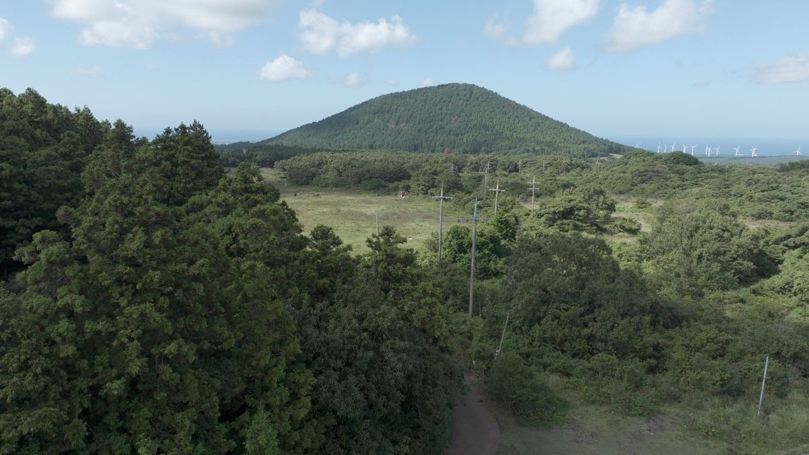
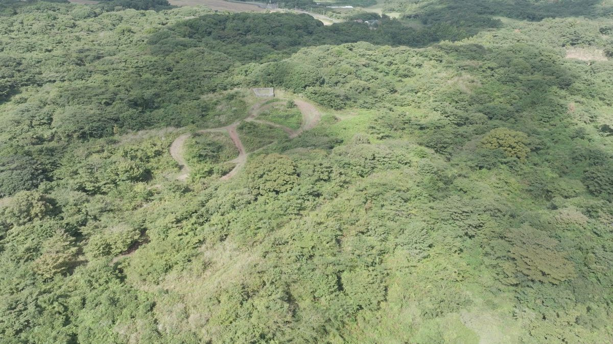
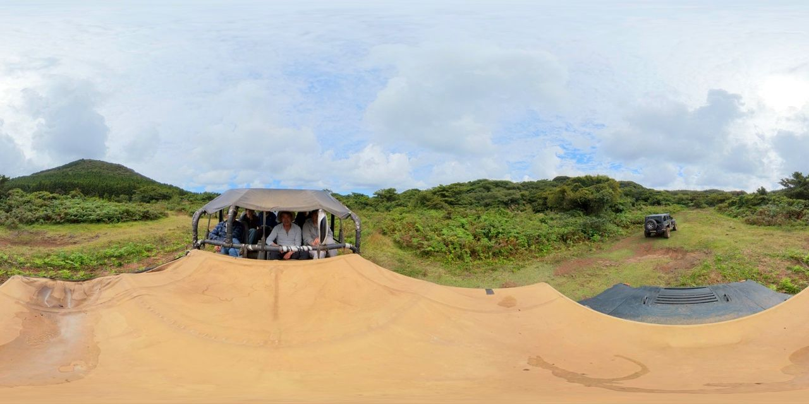

TOUR & COURSE
말이 다져놓은 길, 6.5km
한초이 마스터가 설계한 16개 익스트림 구간. 주행과 포토타임을 포함해 50분이 걸립니다.
COURSE MAP
코스 개념도
※ 개념도입니다. 실제 코스 GPS 트랙은 360 영상의 SRT 데이터로 제작 예정입니다.
- 01브리핑 & 안전벨트
탑승 전 안전 교육과 사전 동의서 확인. 화장실은 여기서 마지막입니다.
- 02초원 질주
시야가 트인 초원 구간. 속도감이 붙는 첫 번째 도파민.
- 03곶자왈 돌파
원시림 사이 좁은 길. 나뭇가지가 차창을 스칩니다.
- 04선새미못 포토타임
차를 세우고 드라이버가 직접 찍어주는 화보 타임.
- 05한라마 조우
운이 좋으면 방목 한라마 무리와 노루를 만납니다.
- 06급경사 & 진흙 구간
비 오는 날이 오히려 하이라이트. 우비를 준비하세요.
ALONG THE WAY
코스에서 만나는 것들




진흙 주행 컷 촬영 자리
